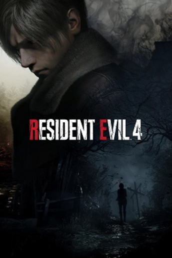

Red Dead Redemption 2 - ⭐⭐⭐⭐⭐
Gráfico incrível, jogabilidade padrão rockstar, porém com algumas mudanças pra tornar o jogo mais "realista", personagens muito bem escritos.
E o principal, história impecável.
Sekiro: Shadows Die Twice - ⭐⭐⭐⭐⭐

No começo é díficil se acostumar com o combate, porém depois de se acostumar com o ritmo, o jogo fica maravilhoso,
melhor combate da FromSoftware de longe, com ótimos chefes. A história eu sinceramente fiquei boiando, os mapas são bem desinteressantes comparados os outros jogos da empresa e o sistema de prótese pra mim foi bem inútil.
Atomic Heart - ⭐⭐
O jogo é bem genérico, toda a estética e ambientação da união soviética é muito bonita.
Na verdade toda a parte visual e sonora do jogo são o ponto forte aqui. As musicas, o design dos robôs e toda a arquitetura soviética é muito interessante.
O resto é basicamente um jogo de tiro com poder, no estilo bioshock. Mais pro final do jogo teve algumas partes que me lembraram DOOM,
com o combate mais frenético e a música acompanhando a ação. Se o jogo tivesse seguido por esse caminho ele seria mais divertido sem sombras de dúvidas.
A história é ok, porém o final é muito meme. "O" não, "Os" finais, já que tem 2 e ambos são péssimos. O jogo não é ruim, é bem OK, mas eu esperava mais
God of War (2018) - ⭐⭐⭐⭐
O jogo é muito bom, a gameplay é muito gostozinha, combate fluído exploração pica, mapas muito bons.
A história também é um ponto forte, eu fui esperando algo muito mais completo, já que né, ganhou o GOTY de 2018 no lugar de Red Dead Redemption 2,
na verdade esse jogo todo na minha visão é ofuscado por esse fato. Eu não consigo ver ele como um "adversário" a altura do RDR2,
por que o red dead é perfeito, esse é "só" muito bom. A história é bem simples, mas é muito boa, realmente é um ponto inicial pro jogo que veio em seguida.
The Last of Us Part I - ⭐⭐⭐⭐
Julgando exclusivamente o port pra PC não tem muito o que falar, o jogo tá uma bosta de otimização. Melhorou, mas precisa melhorar muito pra ser decente.
Agora tirando o elefante da sala, The Last of Us continua incrível 10 anos depois do seu lançamento, o remake parece uma ideia estúpida e desnecessária,
porém jogando novamente com a possibilidade de ver essa história de um modo mais moderno e bonito, só me faz lembrar o quanto esse jogo é bom. A história
que é o foco aqui é muito bem contada, mesclando a gameplay e as cutscenes de forma bem natural. Apesar dela ser bem simples, ela tem sua profundidade,
com personagens cinzas num mundo cinza, onde cada um faz o seu pra sobreviver, não existem vilões e mocinhos, apenas humanos num mundo de merda.
Os infectados são únicos, a maior característica desse universo com certeza. A gameplay tanto no controle ou no teclado e mouse, é uma delícia,
sendo quase obrigatório depois de zerar jogar o jogo novamente com munição e itens infinitos pra aproveitar o combate do game.
Enfim, não acho que no momento atual vale pagar um fullprice nisso. Updates estão saindo cada semana e estão melhorando o jogo,
então no futuro quando todo esse problema se resolver, acredito que o jogo irá valer cada centavo investido.
Cyberpunk 2077 - ⭐⭐⭐⭐⭐
Praticamente 3 anos depois do lançamento tenebroso em 2020, o jogo tá melhor. Ele nunca foi ruim, mas sempre tinham bugs
e coisas que atrapalhavam na imersão, o que deixava um gosto meio amargo em quem jogava. Joguei o jogo no lançamento
mesmo e tinha gostado muito , mas era nítido que ele era muito problemático. Agora jogando pela segunda vez com um
computador melhor e depois de vários patchs de correção de bugs, acredito que dê pra desfrutar do jogo da maneira que
os desenvolvedores gostariam. Night City é uma cidade muito imersiva e única, cada local tem sua personalidade,
as gangs tem suas características e sempre há algo pra se fazer lá dentro, desde apenas olhar e ver a beleza
do mapa ou fazer algumas atividades e serviços pra aumentar sua reputação. Em relação a gameplay, ela é muito diversa
tendo várias opções de armas de talentos pra personalizar o seu personagem da maneira que você gosta de jogar.
O sistema de progresso do jogo com pontos de características e pontos de habilidade faz cada personagem ser
único e faz com que o jogador tente se especializar em um determinado ponto, já que o jogo recompensa muito.
Único ponto que eu acho ruim desse sistema é a obrigatoriedade em investir pontos na habilidade técnica pra fazer armas melhores,
sendo necessário gastar quase 20 pontos nisso pra fazer armas lendárias, o que pra dificuldades maiores é indispensável.
Em relação a estrutura do jogo ela é bem parecida com o que a CD Projekt RED fez em Witcher 3,
há a missão principal que e diversas missões secundárias e "contratos" em paralelo.
O jogo realmente brilha na minha opnião na parte secundária, a história principal é muito boa,
mas ela é muito objetiva, visto a urgência que o V tem pra resolver logo tudo.
Então tirar um tempo pra ver outras histórias em Night City dá um alívio pra essa pressa toda na história principal,
conhecer novos personagens, novos locais, é tudo muito bom.
Considerando o preço em promoção de R$99,00 eu acredito que o jogo vale muito,
há muitas horas de conteúdo nele e vale apena dar uma chance novamente.
OBS: Após o update 2.0 o jogo mudou muito, e felizmente pra melhor!
O combate agora é muito mais diverso e divertido, o que dá muita vontade de sair por night city realizando os trabalhos.
Pessoalmente eu acho a build de lâminas muito boa, mas vai mais de gosto e eu tenho certeza que todas as variações são boas.
Half-Life 2 - ⭐⭐⭐/⭐
O começo do jogo é muito bom, já começa deixando o jogador curioso pela história apresentando o mundo e os personagens
e também deixando algumas dúvidas em aberto, entre os diálogos há sempre alguns cenários com alguns inimigos que geram
um combate. Depois desse inicio, entre os capitulos 4 e 9, parece que toda a história foi deixada de segundo plano
para dar espaço a diversos e diversos cenários cheios de inimigos repetidos, o que me desanimou bastante a continuar
jogando, já que foram algumas horas seguidas fazendo praticamente a mesma coisa. Há em alguns capitulos alguma variação
de gameplay, principalmente com veículos, com o carro e o barco, porém mesmo assim ainda se torna algo monótono e
repetitivo principalmente o capitulo do carro, já que os mapas praticamente não tem exploração, você só usa o
carro pra ir de um lugar pro outro, praticamente com zero pontos de interesse, apenas alguns locais com inimigos,
que poderiam ser facilmente ignorados se não fosse pela curiosidade do jogador. Já na parte final do game ele
volta a ficar bom novamente. Com o foco sendo denovo passado para a história. Nesse ponto, começa uma "rebelião contra o sistema",
onde por alguns motivos o protagonista se torna a face da rebelião. Apesar de EU ter problemas com os "protagonistas silenciosos",
eu consigo sentir um charme no Gordon Freeman, mesmo ele não falando nada , o jogo consegue passar a sensação que
todos os aliados confiam nele, apesar de ser algo bobo você se sente realmente liderando uma rebelião, como um líder de um esquadrão.
Além disso o final do jogo é, sem spoiler, muito interessante, criando uma expectativa para a sequência dessa história.
Em relação a gameplay, a movimentação é simples, porém bem precisa, você pode pular, correr, andar, se agachar,
o jogo não tem sistema de stealth sendo tudo resolvido na base do tiro. As armas são bem diversas tendo pistolas,
metralhadoras, armas de longo e curto alcance entre outras. Os gráficos são muito bonitos, óbvio considerando que
ele é de 2004. Como era de se esperar tudo é muito parecido com CS, o que me traz uma nostalgia, porém além disso
fui surpreendido com uma iluminação muito decente e reflexos impressionantes, o estilo de arte do jogo puxa pro
realismo o que pros dias de hoje não envelheceram perfeitamente, mas tem o seu charme. Uma coisa que eu senti
muito falta foi de trilhas sonoras marcantes, tocam algumas músicas de vez em nunca, mas na maior parte do tempo
você como Gordon Freeman passa sozinho, o que gera uma sensação estranha, não sei se foi proposital, mas a engine
desse jogo por algum motivo me deixa meio melancólico. No final do dia, Half Life é um jogo bom, não mudou minha
vida, mas me conseguiu me divertir. Principalmente pelo preço que você consegue comprar toda a franquia aqui na steam
e também pela influência que teve no mundo dos games, eu considero que todos deveriam jogar pelo menos uma vez algum título da saga.
The Legend of Zelda: Breath Of the Wild - ⭐⭐⭐⭐⭐
Agora eu consigo realmente entender por que Breath of the Wild é tão incrivel.
Claro, vendo o jogo com os olhos de 2023 é perceptível como esse jogo foi revolucionário,
muito da industria dos jogos é como é, por causa desse cara. Elden Ring não seria feito daquela forma se BOTW não fosse assim.
Mas ainda sim, com os olhos de hoje ainda é incrivel como esse jogo te deixa ser livre. Liberdade é a palavra que reina,
você pode fazer oque quiser, como quiser. O jogo não te prende a nada, ele apenas diz o objetivo e você tem que se virar pra alcançá-lo.
Além disso, há muitos sistemas que fazem o mundo ser incrivelmente interativo. Isso me causava um certo "medo", pois achava que ia me
perder e ter que ir a todo momento pesquisar um detonado no youtube, só que os sistemas são tão bem feitos, e a exploração
é tão intuitiva que tudo parece fluir de forma natural. Tudo é muito lógico, e apesar de ter uma forma "correta" de fazer tudo,
sempre tem um jeito de dar a volta e fazer algo de forma diferente. Se eu preciso ir num lugar que é muito quente,
eu posso fazer uma poção que me ajude a suportar o calor, posso comprar uma roupa que aumente minhas resistências,
posso ir tomando dano mesmo e me curando, as possibilidades não acabam. Isso faz com que cada experiência seja única,
e cada pessoa faça sua história de maneira diferente. No meu caso, por exemplo eu não usei cavalos, já que sempre deixava o coitado
num lugar aleatório e ia escalando, e quando chamava novamente ele não escutava, então não posso falar muito sobre o sistema de montaria, por exemplo.
Outra pessoa podia não tirar a bunda da sela e jogar o jogo todo com um cavalo especial, como se estivesse jogando um RDR2.
Falando mais sobre a gameplay do jogo e deixando a exploração de lado, o jogo peca em alguns pontos. Em relação ao combate, eu não gostei.
Ele é muito pouco complexo, e muito fácil, apesar de ter uma variedade boa de armas, você sempre acaba apertando o mesmo
botão pra matar os mesmos inimigos da mesma forma. O arco é muito divertido, acho que é a melhor parte do combate do jogo,
mesmo sendo no controle é muito bom mirar com ele. Outro ponto que é marca registrada da franquia zelda são as dungeons, e bom.
O que falar sobre elas? As bestas divinas são muito legais só que elas são muito simples e fáceis, não tendo nenhum graaande
puzzle de quebrar a cabeça. A junção desses 2 fatores resultam em algo que eu senti jogando isso, o jogo é muito fácil.
Tudo bem, é óbvio que depois de jogar mais de 40hrs, ter armas boas e ter feito todos as bestas o jogo ficaria fácil,
mas o ponto é que em nenhum momento da "main quest" o jogo te dá algum desafio. Não que isso seja algo ruim,
já que nesse Zelda o que importa é a sua exploração, muitas vezes a forma de chegar até o desafio é mais desafiante que o desafio em si.
Em relação a trilha sonora, ela é muito linda, apesar de ser bem discreta. E os gráficos são muito bonitos, com destaque para o
design dos personagens e das bestas divinas. Em resumo, o jogo é muito bom e se não fosse tão grande eu fazia 100%
Resident Evil 4 Remake - ⭐⭐⭐⭐

Rapaz, o jogo é bom. Gráfico bonito, gameplay gostosa, história boa. Mas não sei, o começo me pegou muito, mas lá pro meio/final do jogo,
parecia que ele nunca ia acabar. A cada capitulo eu achava que tava acabando, mas acontecia alguma coisa que só enrolava a história.
Minha gameplay foi de 16hrs, mas eu senti que durou mais ou menos umas 30. Fora isso, algo que me encomoda muito em toda a franquia é o
fato das batalhas contra chefe na sua maioria serem contra seres gigantescos e feios. É muita forçação de barra aceitar que um cara de uns 1,80
de altura consegue derrotar um monstro de 10 metros só na base da bala. Além disso, essas partes são muito chatas, tendo que ficar
gastando centenas de balas em um único inimigo enquanto tu fica correndo igual um besta. O sistema de dificuldade do jogo é muito fácil de
ser manipulável, o que faz a dificuldade do jogo baixar muito. Em resumo, eu gostei do jogo, mas não jogaria de novo.
Ou talvez jogaria numa dificuldade mais baixa só pra curtir os gráficos, mas por agora já deu. Vai tomar banho Leon e Ashley que vocês 2 estão podres.
Starfield - ⭐⭐⭐⭐
Deixando todo o hype e o hate de lado. O jogo é sim muito bom, a história que é o principal ponto é muito cativante e bem interessante,
deixando o jogador imerso no mistério e na curiosidade junto com os personagens. Há sim alguns problemas de polimento e de gameplay que poderiam ser mais
fluídos, como por exemplo o excesso de telas de loading e o combate de naves, porém isso não chega a realmente incomodar. Em relação ao combate normal,
ele é decente. É muito parecido com o Cyberpunk, porém eu sinto que ele é um pouco pior, apesar de ser diverso tanto em questão de builds quanto de armas,
os inimigos são meio burros e o feeling das armas não é tão gostoso. Os gráficos são bonitos, porém não faz jus ao hardware que esse jogo necessita pra rodar.
Comparando novamente com cyberpunk, que tem um mundo mais vivo, mais denso, melhor expressões faciais dos personagens, texturas melhores e roda muuuuuuuito mais de boa.
Falando também do mundo, apesar de não ser mundo aberto, a bethesta conseguiu criar a impressão de mapa vivo nas cidades principais.
Akila e Nova Atlândida são bons mapas, porém ela só conseguiu fazer isso nesses mapas. No resto dos planetas é tudo muito morto e
sem nada pra fazer. Em resumo, eu acho que sim vale jogar. Precisa ter um pouco de paciência com os loadings, mas é jogável. Ah, e infelizmente não é GOTY.
Alan Wake - ⭐⭐⭐⭐⭐
Realmente o jogo me impressionou bastante, a história é muito boa, cheia de metalinguagem, muito bem escrita e amarrada, a gameplay é bem simples,
mas muito bem executada, em nenhum momento fica chato eliminar os inimigos, há uma pequena variedade de armas e itens que auxiliam no combate.
Os gráficos pra 2010 tão ótimos, parece um jogo de ps4. Em relação a duração, eu não achei ele grande, nem pequeno, na verdade duração do jogo bastante justa,
não é rápido demais e também não fica enrolando. Fiquei ansioso pra jogar os outros títulos da Remedy e principalmente a sequência,
já que o final do jogo deixa um espaço enorme pra continuação preencher.
Alan Wake II - ⭐⭐⭐⭐⭐
Alan Wake 2 faz da Remedy pra mim uma das melhores empresas da indústria.
É impressionante como todos os seus jogos tem uma identidade única, seja na história, no visual ou na gameplay.
Como uma sequência é impressionante como esse jogo melhora praticamente tudo o que o seu antecessor fez,
a gameplay continua muito boa, tendo uma pegada agora mais survival horror e investigativa em comparação ao primeiro game.
O que encaixa perfeitamente com a história mais sombria que é apresentada. E por falar da história, ela é incrível. Sério,
faltam elogios pra descrever o quão impressionante é a narrativa desse jogo. No começo, é apenas uma investigação do que parece ser uma série de assasinatos,
porém a medida que a investigação vai avançando, os mistérios de Bright Falls e Cauldron Lake se envolvem mais uma vez.
Ao ver os trailers e materiais do jogo, eu achei que a nova personagem ia ofuscar um pouco a história por tirar o foco do Alan,
já que ele é um personagem muito bom, porém não só os novos personagens adicionam muito a história, como o Alan Wake não é deixado de lado.
A divisão da história e a ordem que ela é contada ficar a questão do jogador é um detalhe muito bom,
já que de acordo com a sua curiosidade você pode avançar uma determinada trama.
O final assim como o primeiro jogo finaliza a história deixando algumas pontas em abertas,
porém nesse caso o final "verdadeiro" será adicionado no jogo num update que adicionará também o new game plus.
Enfim, o jogo é incrível, com certeza um dos melhores e mais únicos que já joguei. Infelizmente, ele foi "ofuscado" pelo Baldur's gate
e não ganhou o game of the year, porém os prêmios de melhor narrativa e melhor direção foram merecidissmos e Alan Wake II é com certeza uma surpresa desse grande ano.